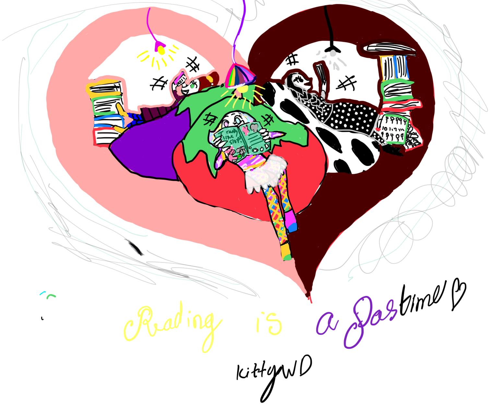

Có thể nói một người đọc tốt thường là một người thành công. Thành công không chỉ là giàu có, mà thành công còn được nhắc đến Ở nhiều khái niệm khác nhau như là sự tự tế, Hạnh phúc, lòng ham mê khám phá tri thức thế giới với những cuộc phiêu lưu, hành trình khám phá khoa học, nghệ thuật, …
Đọc sách giúp đứa trẻ thành công không chỉ trong học tập mà còn trong cuộc sống.
Ở vai trò là cha mẹ chúng ta có nhiều điều quan tâm, trong đó hai điều quan trọng cần phải hoàn thành, điều thứ nhất là giúp con lớn lên khỏe mạnh và hạnh phúc, điều thứ hai là giúp con phát triển các kỹ năng đọc để có thể khám phá cuộc sống một cách chủ động và đa dạng. Nhìn chung có thể nói chiếc chìa khóa đến với trí thức trên thế giới là sách, dĩ nhiên ở nhiều dạng khác nhau.
Câu hỏi đặt ra là làm thế nào để giúp con ham đọc sách?
Có những nguyên tắc chung mà Mình thấy tại Việt Nam có thể chưa ai trao đổi kĩ với mình khi mình chuẩn bị làm ba mẹ.
Học là xu hướng tự nhiên
Thông thường trẻ sơ sinh đã có thể học. Trẻ học qua hình ảnh và âm thanh xung quanh. Trẻ sơ sinh thường bắt chước những âm thanh. Bé sẽ quan sát những biểu cảm và cử động của ba mẹ và những người xung quanh vì vậy điều đầu tiên giúp bé là hãy trò chuyện. Khi trò chuyện với bé thì bạn sẽ giúp bé yêu ngôn ngữ và học được các từ vựng kể cả tiếng mẹ đẻ và tiếng nước ngoài. Khi trẻ lớn dần lên khi trẻ lớn dần lên cha mẹ tiếp tục trò chuyện với con hỏi về những việc con làm những sự kiện và nhân vật trong câu chuyện mà bạn đọc cùng con. Trẻ cần được biết là ba mẹ đang chăm chú lắng nghe những gì cháu đang nói. Khi trò chuyện và lắng nghe con, nghĩa là bạn đang khuyến khích bé suy nghĩ khi nói. Đồng thời bạn cũng thể hiện mình tôn trọng kiến thức và khả năng duy trì việc học của con mình.
Vì vậy hãy tận dụng Mong muốn khao khát học tự nhiên này của con người để cùng đọc với bé.
Đồng thời cũng cần hiểu trò chuyện và lắng nghe cũng là một hoạt động trong hành trình đọc sách.
Và nếu có ai đó khuyên bạn “hãy là một người đọc sách” để làm mẫu cho con thì bạn cũng thấy rằng đây là một lời khuyên phù hợp. Trẻ có thấy cha mẹ đọc sách thì việc đọc sách đối với trẻ là chuyện bình thường.
Không khiên cưỡng
Để bắt đầu, không cần phải quy định nhiều thời gian cho việc đọc sách với con. Đầu tiên có thể bắt đầu vài phút rồi vài lần trong ngày, khi con lớn dần lên thì con sẽ muốn nghe kể chuyện lâu hơn. Thường mọi người sẽ khuyên từ mười lăm cho tới 20 phút hoặc dành 30 phút mỗi ngày để đọc sách với con nhưng trong trường hợp bạn bận rộn hoặc là không dành được thời gian để đọc sách với con mỗi ngày cũng không nhất thiết phải cảm thấy áy náy. Điều quan trọng nhất của việc đọc sách là cả bạn và con cần phải thấy niềm vui không phải là sự bắt buộc, cũng không phải là bài học Phải hoàn thành.
Những thời gian đọc sách phù hợp có thể tùy theo gia đình nhưng đa số sẽ chọn thời gian đọc cho con lúc chuẩn bị đi ngủ bởi đây là lúc mà trẻ cần được cảm thấy thư giãn thoải mái, gia đình vui vẻ. Nhưng nếu nhà bạn có thời gian vui vẻ vào buổi trưa hoặc buổi chiều hoặc buổi sáng thì bất cứ lúc nào trong ngày cũng là giờ đọc Sách được, miễn là vui vẻ thoải mái.
Trong cuốn sách “người Mỹ giúp con ham đọc sách” của Bộ giáo dục Hoa Kỳ (tiếng Việt)Nhà xuất bản phụ nữ) các nguyên tắc và Kỹ năng mà người Mỹ giúp con đọc sách. Bạn có thể tham khảo thêm.
Kỳ tiếp
Ở mỗi độ tuổi khác nhau thì trẻ cần được hướng dẫn để được đọc sách khác nhau
Đối với các trẻ dưới sáu tuổi có thể chia thành những cái nhóm tuổi cụ thể như sau: (1) trẻ sơ sinh từ mới sinh tới dưới một tuổi, (2) trẻ từ 01 tới ba tuổi; (3) trẻ từ ba cho tới bốn tuổi và (4) trẻ năm đến sáu tuổi.
